Life History Editor Tutorial
Creating Domain Specifications from Object Life Histories
The life History Editor of GIPO can be used to describe the
changes instances of object classes may undergo during planning and
to show how the life histories of different sorts and instances of
objects may interrelate. The created life histories are then
sufficient to build the bulk of the full domain specification. This
tutorial should be read in conjunction with the Life History User manual. The
tutorial focuses on the meaning of life history drawings more than on
the mechanics of drawing the life histories themselves.
First Example - Espresso Coffee Maker.
To make espresso coffee or cappuccino coffee the home barista has
to manage the process of filling the machine with fresh ground
coffee, ensuring that the boiler is at the correct temperature for
the task in hand, either brewing espresso or frothing the milk, used
in cappuccino, and performing these task in the correct order to
successfully make the desired coffee for visiting friends.
Some
Assumptions: We will assume that there is an adequate supply of
freshly ground coffee available and endless supplies of water and
milk.
How do we make espresso? The coffee machine has a
filter head capable of holding enough coffee to make one shot of
espresso. The use of the filter and coffee holder follows a cycle for
each cup of espresso made.
First the filter
must be filled with fresh coffee,
assuming that it started off empty,
after having filled the filter we need to wait until we are in a
position to brew the coffee and then
finally empty the
used filter coffee to allow the process to repeat. In
describing what we need to do with the filter we have identified
three actions that apply to the filter i.e. fill the filter, brew the
coffee and empty the filter. There are also three states that the
filter may be in, empty, full
and used. We can easily picture this
cycle in a "transition graph".
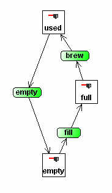
In
this graph the states of the coffee filter are represented by
rectangles with an appropriate icon embedded within the state
rectangle along with a name for the state. The green rountangles are
the named actions that need to be performed to change state with the
connected arrows indicating which state changes are brought about. To
change the name of a state simply double click on the graph node and
edit in place. On the top row of the tool bar you can select an
appropriate Icon for the type of object you are defining. This is
done most easily if you enter the type name and choose the icon
before creating the first object state. If you need to do this later
then
select the state node and use the replace tool from the top toolbar  .
Make sure the correct state name and Icon are displayed.
.
Make sure the correct state name and Icon are displayed.
Second the cups go through a
number of stages in the coffee making process. We need to fetch
a clean cup and place it below the filter.
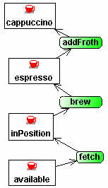
When
the cup is in position we may brew the
coffee which pours into the cup. We now have, we hope, a perfect cup
of espresso coffee. If we want a
cappuccino we need to perform another
action and add hot frothed milk. For the perfect cup one third hot
milk and one third milk froth, the other third being of course the
espresso, but we can model all this just as the action of adding
froth. There is of course now the pleasure of drinking the
coffee with our friends and ultimately the chore of washing up but
all that is beyond the scope of our coffee making model.
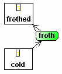
We
have not yet finished modelling the coffee making process there is
still the milk to think about if we are going to have cappuccino's.
But given our assumption of adequate supply and no constraints on the
size of our milk jug we just model this as one action of frothing
the milk in which case it simply changes from cold
to frothed.
In modelling the process of producing the perfect
cup of coffee we must not forget the boiler or heater which we need
at the correct temperature before we are able to perform many of the
actions described above.
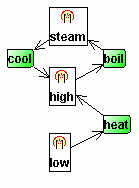
For
the purposes of modelling the heater there are three states or
temperatures that are relevant to us. First before we can make any
coffee we must heat up the boiler and
get the temperature to the state we will simply call
high, this is the temperature at which we can make espresso.
If we want to froth the milk however we must heat the boiler to a
higher temperature to produce steam to
enable us to froth the milk. The steam temperature is however too
high to make further espresso hence if we need to make another cup of
espresso the boiler must be cooled to
get it back to the correct temperature for brewing espresso.
Our
model built so far is an over simplification in a number of ways.
Some of these over simplifications arise from the assumptions of
"Classical Planning" which we are limiting ourselves to in
this tutorial. These Classical Planning assumptions restrict us to
ignore durations of actions and to model changes of state as discreet
steps and not continuous change as may be the case in reality as for
example when we heat the boiler it does not instantly go from its
high temperature to the boiling temperature required to produce
steam, this is a continuous process of change taking time. These
omissions in our model are however deliberate. What we need to capture
even for Classical Planning and have not yet done so is the
dependencies between the states of objects of different kinds. We
have not for example captured in the images, the fact that the boiler
needs to be in the high state before we
brew the coffee, nor that it must be in
the steam state before we can froth
the milk.
To capture the dependence between the state of one
type of object and an action performed on another we connect the
state rectangle with the corresponding transition rountangle by a red
arrow.
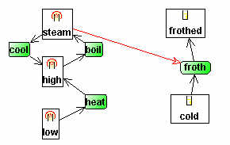
The
single headed red arrow establishes what we call a "prevail"
condition. It shows that an instance of the heater must be in the
steam state at the point at which the
milk changes state from cold to frothed.
A consequence of this is that the heater could not change state at
the same instant that the froth action
is performed.
A second type of
dependency that occurs in the coffee making example is that the
action of brewing the coffee is mentioned both with respect to the
filter and with respect to the cup. What we need to model here is
that these are not independent actions. Brewing the coffee in the cup
is the same action as brewing the coffee in the filter. To put it
another way the change in state of the filter must take place at the
same time as the corresponding change in the cup.
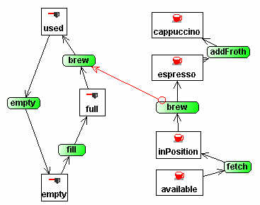
In
this diagram we show by the use of a form of double headed red arrow
what we call a common necessary transition. The
dependency is also indicated by the use of the same name, brew,
to describe the actions that bring about changes of state in both the
relevant instances of the cup and the filter of the coffee
machine.
The significance of the circle arrow head is that it
marks the "source" action node when the arrow was drawn and
the name of this node is automatically propagated to the connecting
"target" node.
The
complete diagram for the life history of the Espresso Coffee machine
is shown below as drawn in GIPO's Life History Editor.
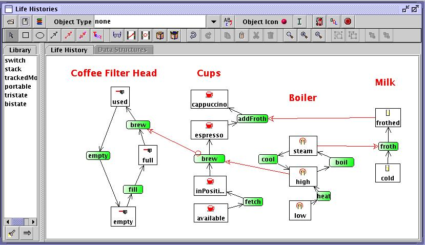
Once drawn the diagram can be checked  for low level consistency and the specification produced
for low level consistency and the specification produced  in GIPO's internal language OCL.
in GIPO's internal language OCL.
Do not forget some explanatory text. Add text notes
using the text tool . As a minimum
you should at least name the types of objects used it all makes the
diagram easier to understand.
Also remember you need to save the graphic image of your domain and the
specification separately.
You need to do both once you are satisfied with your model.
To validate our model we would now try and dynamically test it. We
can do this within GIPO by first defining a task to be formed. This
will involve both ensuring that we have defined example instances of
the object sorts introduced in out model, do this using the Sort
editor, and defining the task in the
Task Editor. Once we have a defined task we can either try and
manually construct a plan using the Stepper or we can use one
of GIPO's built in planners to try and construct a plan to solve the
task. If you cannot construct a plan then the Stepper should
help you identify at what point your expected plan to solve the task
fails. You may be able then to identify flaws in your model.
A More Complex Example
As an illustrative example we describe the Hiking Domain, a planning
domain with documentation and description on the GIPO resource page.
Two people (hikers) want to walk together a long clockwise circular
route (over several days) around the Lake District of NW England. They
do one ``leg" each day, as they get tired and have to sleep in their
tent to recover for the next leg. Their equipment is heavy, so they
have two cars which can be used to carry their tent and themselves to
the start/end of a leg.
Using Properties
In the Hiking domain in addition to charting simple state changes we
must keep track of where the tent car and
people currently are. In addition with the people, the walkers, we need
to keep track of which stages
of the walk they have completed. We can accomplish this using the
notion of properties. The tent, cars, and people all have a property of
being located. For each type of object we choose a name for the
property, for example with the tent we might call the property
"tentAt", for the car "carAt", for the person "personAt" but though
names of
properties must be unique to types of object they all share the same
value type which we might call "location"
or simply "loc". To add properties to object we select one state node
for the object and right click to
bring up the editor popup menu and select "Properties". We see the
empty editor.
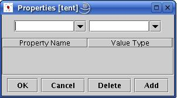
We should enter the property name "tentAt"
and value type "loc" in the respective edit combo boxes and press Add.
We now see the result after pressing "Add" and as this is the only
property for the tent press "OK" to record the properties and dismiss
the dialog box.

The locatedness property will now be associated with all states of the
tent, not just the state we selected when
we added the property. To confirm this look at the properties of any of
the other states.
The same task now needs to be repeated for the car giving it the
"carAt" property and for the person but give the
person the two properties as shown in the property editor for "person".

The Hiking domain with the life histories and properties described
above are captured in the following diagram:
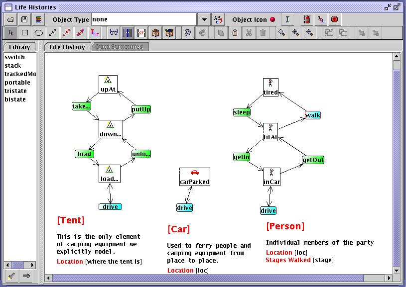
At this point we still have not shown how the actions affecting the
different object sorts interact nor have we described how the drive
and walk actions brings about change in the
locations of the objects concerned.
Clearly as described above each of our object sorts have a location
property but that is present in every state of each object, and the
value of that property is not constrained by the states. Properties only
change when a transition is defined as bringing about a "Property
Change".
Right clicking on a transition bring up a popup menu with the option Property
Change selecting this will generate a dialog box as shown below:
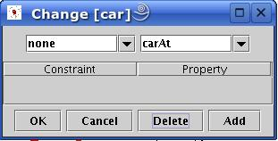
This dialog will show any defined "property changes" and provide the
opportunity to edit and add new
rules for changing properties. The right hand combo box is populated
with the names of properties
applying to the object sort undergoing this transition. The left hand
combo box will contain the value
"none" but any new name starting with a lower-case letter can be
entered into this combo box. If we press Add with the current
options chosen, as shown above, we are committing to allow the value of
the carAt property to change between any two locations when the
drive operation takes place.
If we had provided a constraint name such as "next" we would be
committed to defining instances of the
predicate next(<loc>,<loc>) to define relationships
between locations. The set of
such relationships could form a route from location to location. [This
is precisely what we do
with
the walk action to define the changes of location along the
route that the walkers must take.]
With driving the car no constraints are placed on where the car can be
driven to, hence accepting the "none" option is adequate. After
pressing the add button the changes can be committed by
pressing OK. Just as we have defined a property change for the drive
action of the car we must do the same for the tent and
the person as their changes must conform to that of the car.
But before considering fully how the drive action property
co-ordinate there is still the aspect of our informal specification of
the problem that walkers do so as couples to capture. Again if you
right click on a transition node in the diagram the popup menu allows
you to specify a "number" constraint. A number constraint allows you to
require that multiple individuals of the same sort all make the
transition at the same time. It also allows you to specify any
relationship that must hold between those making the transition. For
the couples making the walk together the number constraint dialog box,
after entering the constraint looks as follows:
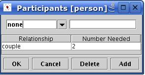
This requires that we provide entries for the "2" place predicate couple(<person>,<person>).
This can be done in the Atomic Invariants editor.
Finally We can specify the co-ordination between the transitions
of the distinct object state machines. Some of the transitions are of
the sort that we used in the "Coffee making" example. We require, for
example that the "tent" be in the "up" state before a person can make
the "sleep" transition, but even here there is an additional
complication. It is not only the case that the tent be "up" to allow
our walkers to sleep but it must also be at the same location. This
requirement will, however, be met as a default. When two state machines
must coordinate, if both possess a property with the same value type
then these properties must take on the same value. This default
behaviour can be overridden by using the "coordination constraints"
available when right clicking on the selected arrow linking the
elements of the state machines.
The coordinations described so far all simply last for the duration of
one transition of, one or both state machines, but in some cases an
element of co-ordination must last for multiple transitions. This
happens between the "car" and the "person" who drives the car about.
Not only must the person "car" make a "drive" transition whenever the
"person" does it must be the same "car" that the person got into getIn
and eventually leaves getOut. This is specified by setting
up an association between the person and the car when the person gets
in getIn to the car. We see the result of this in the following
diagram fragment
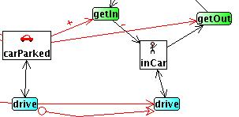
In this fragment the single headed red arrow between the "car" in the carParked
state and the getIn transition of the person form a prevail
condition which requires the car to be in the state carParked
and also to share the "location" value for its locatedness property
with the locatedness property of the person. The "+" annotating the
arrow, created by selecting the arrow and right clicking to bring up
the popup and then selecting the option "Start Association", means that
the particular car that fulfilled this role will be associated with the
person making the transition until such time that the association is
broken. In the same diagram above we also see how the association is
broken, indicated by the "-" annotation the red arrow linking the carParked
state with the getOut transition. Without such associations in
an example with multiple "cars" and multiple "persons" there would be
no guarantee that the person needs to get out of the same car that they
previously got into. Association one started last throughout all
transitions of the receiving object [destination object of the
connecting arrow] until a transition is made the breaks the
association. In this example there is only one relevant state of the
person inCar but that state may be visited multiple times by
the driver driving to multiple locations before getting out. In other
cases there could be transitions to other states while the association
is maintained. Clearly creating and breaking associations will normally
happen in pairs.
In the "coffee" example we saw coordination constraints formed between
transitions of different state machines, formed using a kind of double
headed red arrow, where both transitions take on the same name. In the
last diagram above we see such an arrow linking the drive of
the car to the drive of the person. This as before requires
that whenever the person makes this transition the car must also. We in
a sense are specifying that the car has a driver. In this diagram we
also see a single headed red arrow connecting the drive of the car, the
"source" to the drive of the person, the "destination". This form a conditional
coordination. What this means is that any person may make this
transition, if inCar when the car does but there is no
requirement, other than that already specified for the driver, for
there to be such a person in order for the car to make its drive
transition. This is more obvious when we look at the connection between
the "tent" and the "car" state machines
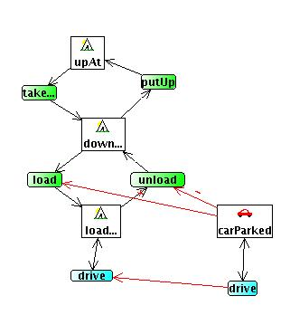
where it is clear that the only way the "tent" can make its drive
transition is when the car does but it is not a requirement for the car
that a tent be loaded into it and be driven around to allow it, the
car, to be driven from place to place.
The complete hiking domain life history diagram is shown below
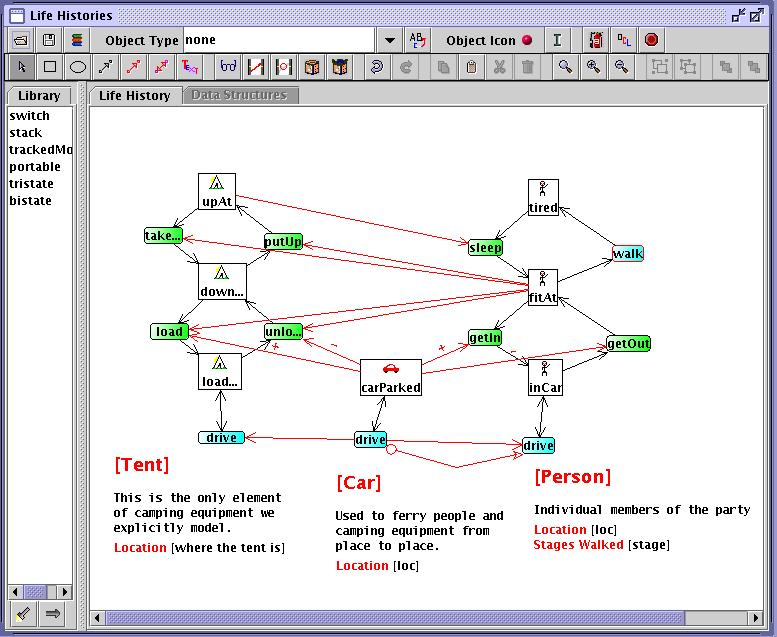
Completing The Domain Specification
To produce the textual domain specification the button needs to be pressed.
This will produce a complete specification but without any instance
data or task specifications. The instance data is added by naming
object instances using the Sorts editor, the sorts themselves
are already created.
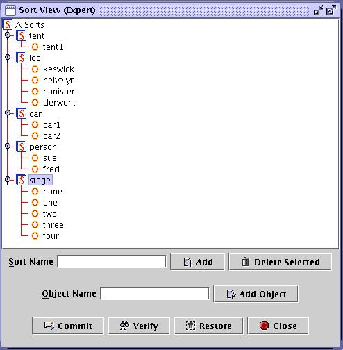
Shown above is the Hiking domain populated with two cars two people a
tent and four locations.
In addition to the object instances the various static constrains must
be given instance data. This is done in the Atomic Invariants
editor shown below with data for the Hiking domain, again the static
predicates are already defined only instance must be created.
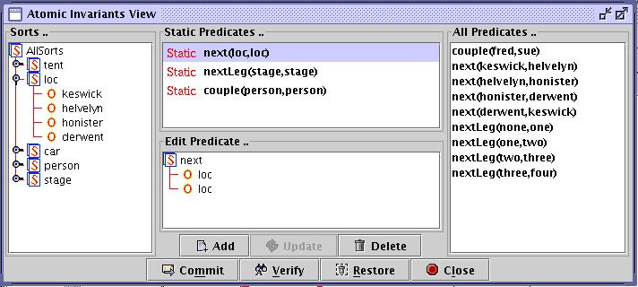
The only remaining element is defining some tasks in the task editor. A
one leg walk task for the hiking domain is shown below.
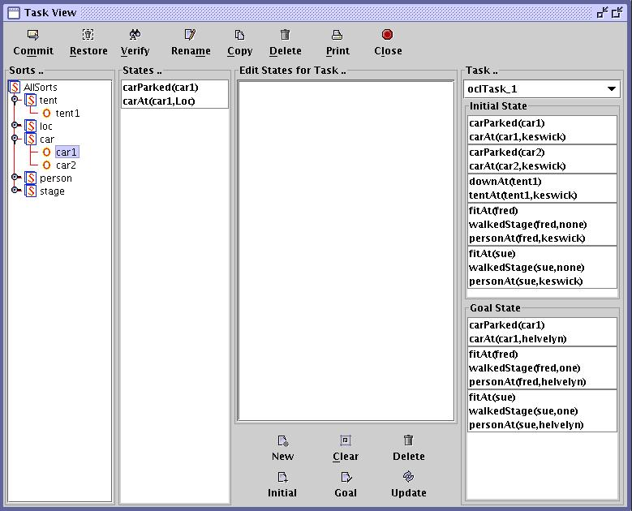
Some Diagramming Rules
- Identifiers i.e. names of states and transitions must start with
lower-case letters and be followed only by letters, digits or the
underscore character. This is checked by the
 check command but is not enforced during in-line editing of nodes.
check command but is not enforced during in-line editing of nodes.
- Transition nodes linked by merge arrows
 or 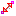
must also have the same name unless the target node forms a disjunction
(See below)
or 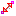
must also have the same name unless the target node forms a disjunction
(See below)
- Property names must be unique to each object sort. For example if
multiple object sorts all have a location then a locatedness
predicate has to be created for each distinct object sort, though the
may share the same argument type.
Features not used in the examples
In the coffee and hiking domains there are no examples
of transitions forming disjunctions. Disjunctions are
allowed when a transition node has two or more merge arrows connected
to it as target. In this case if the node is made a disjunction then
one version of the transition implicitly exists for each merge
connection. The default is that the multiple merge connections modify
the same transition. This feature is used in the blocks work to
simplify the diagram. Warning this feature is not
currently robust in that chaining of actions merged with disjunctions
is not fully general. This limitation may be removed in a future
release.
 back
to the tutorial front page
back
to the tutorial front page